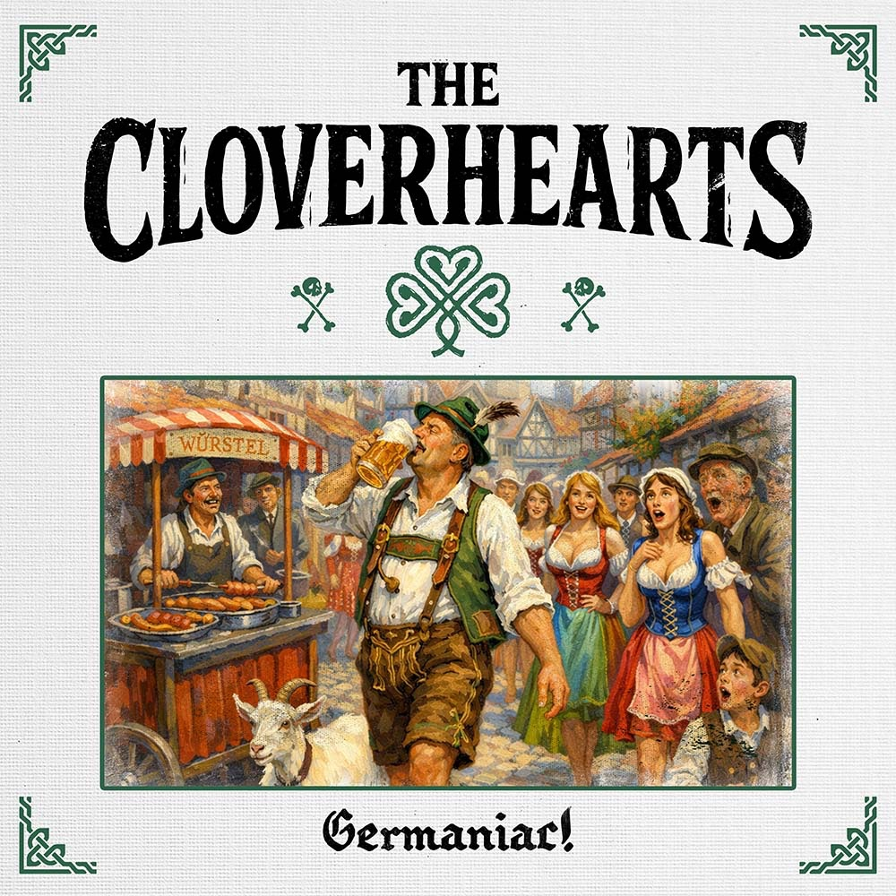

Vorab gehört
The Cloverhearts - Germaniac!

Hinweis: "Germaniac!" erscheint offiziell am 26.06.2026. Dieser Text basiert auf vorab zur Verfügung gestelltem Material.

The Cloverhearts liefern mit "Germaniac!" ein Album ab, das schon auf dem Papier klingt wie eine schlechte Idee nach drei Bier zu viel: Punkrock, Dudelsack, Oktoberfest, Hamburg, Würstel, Bier und ein Frontmann, der optisch wirkt, als hätte Dexter Holland von The Offspring irgendwann beschlossen, dass ein bisschen keltischer Krawall der Midlife-Crisis ganz gut stehen würde.
"Germaniac!" erscheint offiziell am 26.06.2026 und liegt dem RandaleFUNK vorab vor. Also noch nicht draußen, aber schon laut genug, um vor mir zu stehen und irgendwas mit Bieratem zu erzählen.
Wer jetzt Dropkick Murphys erwartet, darf sich erstmal hinsetzen. Lange. Sehr lange.
Ja, da ist ein Dudelsack. Und ja, sobald irgendwo ein Dudelsack in einer Punkband auftaucht, raunt sofort jemand "Aha, also Dropkick für Arme."
Aber The Cloverhearts machen etwas anderes.
Das hier ist weniger Bostoner Arbeiterkneipe mit erhobener Faust, sondern eher Skatepunk, dem jemand einen Dudelsack in die Hand gedrückt und gesagt hat: "Mach mal, wird schon gut gehen."
Der Sound erinnert mich an meine Jugend. An diese Phase, in der man dachte, es sei eine gute Idee, mit einem Nunchaku auf dem Skateboard zu stehen und eine Rail runterzusliden, obwohl weder Skateboard noch Rail noch Nunchaku irgendeine Schuld an meinem Charakter hatten.
The Cloverhearts stellen auf "Germaniac!" im Grunde dieselbe Frage:
Geht das auch mit Dudelsack?
Erschreckenderweise: ja.
"Oktoberfest (Beer Is Good)" macht direkt klar, dass hier niemand mit stillem Wasser und einem Gedichtband in der Ecke sitzt. "Hungover in Hamburg" klingt nach einem Abend, nach dem man morgens seine Würde zwischen Hafenklang, Gehweg und irgendeiner fettigen Papiertüte zusammensucht. Und "Goddamn Würstel" ist ein Titel, bei dem man kurz prüfen möchte, ob die Band betreut wird.
Aber genau diese Beklopptheit ist der Punkt.
"Germaniac!" spielt mit Deutschlandbildern, als hätte jemand eine Tour durch Bierstände, Hafenbars, Bratwurstbuden und schlechte Entscheidungen gemacht und danach gesagt: "Daraus bauen wir jetzt Kunst. Oder zumindest Krach."
Musikalisch ist das Ganze deutlich mehr schneller, melodischer Punkrock als klassischer Celtic Punk. Der Dudelsack ist nicht Chef im Raum. Er ist eher der Typ (bzw. die Typin), der ungefragt neben der Hookline steht, Benzin nachkippt und dabei klingt, als würde eine wütende Ziege in einer Kirche einen Verstärker testen.
Und ja, das ist hier ein Kompliment.
Denn Dudelsäcke im Punk können schnell zur Karnevalswaffe werden. Einmal falsch eingesetzt, und plötzlich steht man knietief in grünem Plastikzylinder, Guinness-Schal und Fremdscham.
The Cloverhearts schrammen daran vorbei. Nicht immer mit Sicherheitsabstand, aber immerhin ohne frontal in die Folklore-Mauer zu fahren.
Und bei allem Bier-, Würstel- und Pub-Gekloppe steckt da mehr Haltung drin, als man beim ersten Blick auf das Cover vermuten könnte. Wer Songs wie "Beer Is Good" und "Never Again Is Now" im Gepäck hat, zeigt ziemlich klar: Die können albern, aber sie sind nicht hohl.
Die haben das Herz, oder sagen wir ruhig: den Sack, an der richtigen Stelle.
Gerade "Never Again Is Now" zieht den Spaß kurz vom Barhocker und stellt ihn gerade hin. Da merkt man, dass unter der Oberfläche nicht nur Katerhumor und Dudelsackbeschleunigung liegen, sondern auch eine Band, die weiß, wann Schluss mit lustig ist.
Ist "Germaniac!" subtil?
Natürlich nicht.
Subtil ist hier ungefähr so viel wie an einem Nunchaku-Unfall auf Asphalt.
Aber es macht Laune. Und manchmal ist genau das der verdammte Auftrag.
Wer schnellen Punkrock mag, große Refrains nicht grundsätzlich bei der Punkpolizei meldet und Dudelsäcke nicht sofort mit einem Platzverweis belegt, kann sich The Cloverhearts ruhig mal reinziehen.
Oder einfacher:
Wer auf Dudelsäcke steht und auf Musik, die Dudelsäcke enthält, findet hier genug Gründe, das Bier kurz nicht abzustellen.
Ob man danach wirklich mit Dudelsack statt Nunchaku eine Rail runter sliden sollte?
Nein.
Aber The Cloverhearts liefern mit "Germaniac!" zumindest den Soundtrack für diese absolut bescheuerte Idee.
Dir gefällt die Arbeit vom RandaleFUNK? Dann unterstütze das Projekt gerne mit einer freiwilligen Spende über Ko-fi.